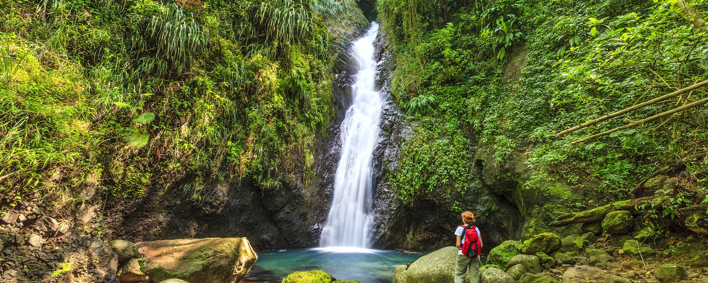

Aunque pueden clasificarse atendiendo según sus características y ubicación
(Como la selva ecuatorial, subtropical, tropofila, montana o de tierras bajas)
desde un punto de vista más básico podemos encontrar dos tipos genéricos:
- La Selva Templada
- La Selva Tropical
SELVA TROPICAL
Es la ubicada en ambientes húmedos y cálidos con regiones de clima ecuatorial.
Con referencia al Ecuador, estaríamos entre 10 grados Norte y Sur. La temperatura
de las selvas tropicales varía a lo largo de todo el año aunque en media estamos
entre 21 y los 30 grados centígrados con un promedio mensual mayor a los 18 grados
centígrados. Las precipitaciones son altas y abundantes.
Las selvas tropicales más abundantes las encontramos en el Sureste de Asia, Centroamérica,
Sudamérica, África Central y Occidental, Australia, Oeste de la India e islas de Nueva Guinea.
Una de las principales y denominada el pulmón verde del planeta, es la selva amazónica que tiene
una riqueza en vegetación y animales extraordinaria.
